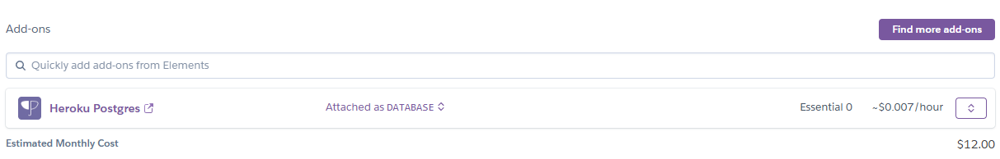

Heroku Lab
- Description
- Getting Started
- Lab Instructions
- Phase One: Django Polls App
- Creating a Django Project
- Creating a Django App
- Working with Models
- Using Django Admin
- Working with Views
- Making Views Render Model Data
- Namespacing URL Names
- Writing a Simple Form
- Refactoring: Generic Views
- Serializing and Deserializing Queries
- Creating a Serializer Class
- Update our views using our Serializer
- Updating the our URLs for the new views
- Updating a Question Using our Serializer
- Other cool things to know
- More information about DRF
- Optional/Outside of Lab
- Phase Two: Heroku
- Phase Three: More Features
- Phase One: Django Polls App
- Restrictions
- Requirements
- Submission Instructions
- Collaboration
- Tips
Description
This lab contains three phases. In Phase one, you will build a simple Django website. Understand the fundamentals of Django's MVC architecture using the built-in models and views.
In Phase two, you will deploy the Django application to Heroku. Understand the reasoning behind Platform as a Service (PaaS) businesses like Heroku. You may follow the official documentation.
In Phase three, you will apply the lab material to add a new API route and a comment section to your polls application!
Learning Goals
- Using esbuild to bundle and create static files with NPM packages for Django to server using whitenoise from Heroku.
- Django config (Level 2)
- Django routes (Level 2)
- Django models (Level 2)
- Using Django with Postgres backend on Heroku
- Using Django with Sqlite backend for local testing
Warning!
There will be no walkthrough for this lab. PLEASE MAKE SURE YOUR CODE IS WELL COMMENTED! This will help the TAs to be able to understand your code when they are marking your lab.
This might affect your Heroku domain. The University's firewall is also inconsistent so it doesn't always seem to do this. IST is looking into it, but, I don't know how long that will take. IST claims that this firewall triggers after "a proprietary amount of activity." So, please expect that your Heroku could become blocked by UWS at any time. We will not give you an extension if your Heroku is blocked.
You have several options to make sure this doesn't happen:
- Bypass the University's DNS server by adding the hostname and IP address of your Heroku site to your hosts file.
- Follow the steps of the "Checking your Heroku app" below.
- Then add it your hosts file:
- It uses the format
ip-address host-name host-nameon each line.- Example (has CNAME):
46.137.15.86 ie02.ingress.herokuapp.com example-app-1234567890ab.herokuapp.com - Example (no CNAME):
34.201.81.34 lab3test-fbb81150e720.herokuapp.com
- Example (has CNAME):
- Linux: edit /etc/hosts as superuser.
- macOS: https://kinsta.com/knowledgebase/edit-mac-hosts-file/
- Windows 10/11: https://allthings.how/how-to-edit-hosts-file-in-windows-11/
- It uses the format
- If it stops working check again with nslookup and update it.
- Use a VPN service or proxy.
- Walkthrough us your lab over using another internet not provided by the University while in the lab.
- Windows: enable DoH.
- Firefox: enable DoH.
- Chrome: enable DoH
- Edge: Should be similar to chrome.
- Other chrome-based browsers: should be similar to chrome.
Getting Started
Prepare your Repo
- Get the GitHub classroom link from eClass, create your assignment, and clone it.
- Create an appropriate
.gitignorefile, to prevent unwanted files being commited to your repository.
Place this gitignore within the root of your project. You can combine this one and this one and this one for your django+node project. Double check you're not staging any unwanted files before you commit. The git status command can help with that.
Make sure your .gitignore contains *.sqlite3.
Create the Virtual Environment
Virtual environment is a CLI tool for managing python dependencies. Different projects have different dependencies, and version requirements. A virtual environment allows you to manage your dependencies specific to your project.
If you have multiple versions of python installed:
Always end the python command with the version number.
For example, on the undergrad machines ugXX.cs.ualberta.ca: you can use python3.11.
Check if you have pip
python3.XX -m pip should give information about how to use pip.
For example, on the undergrad machines ugXX.cs.ualberta.ca: you can use python3.11 -m pip.
Check if you have venv or virtualenv
python3.XX -m venv --help should give information about how to use venv.
If you don't have venv, try virtualenv: python -m virtualenv --help should give information about how to use virtualenv.
For example, on the undergrad machines ugXX.cs.ualberta.ca: you can use python3.11 -m venv --help.
If you don't have venv or virtualenv:
- Run
python3.XX -m pip install --user virtualenv - Check installation:
python -m virtualenv --help
For more info check here.
Create a Virtual Environment
python3.XX -m virtualenv venv(orpython3.XX -m venv venv)source venv/bin/activate(orcd venv/scripts && activate.batif you're on Windows)
The first command will create a directory named venv. Contained in the directory is your project dependency installations and the activate script to enter the virtual environment. When you want to exit the environment, run deactivate.
Lab Instructions
Phase One: Django Polls App
For phase one of this lab, you will be creating a polls application that allows end users to be able to create and be able to answer multiple choice polls.
Creating a Django Project
- Based on Official Docs Overview, Installation
Make sure to use a virtual environment for this lab and that it is activated as shown above!
echo "Django>=5.0.1" > requirements.txt
python3.11 -m pip install -r requirements.txt
If you are encountering an issue with this command in regards to a library called html5lib you will need to update your pip version first.
wget https://bootstrap.pypa.io/get-pip.py -O ./get-pip.py
python3.11 ./get-pip.py
If you're doing this on Windows please make sure to follow the Windows instructions for Lab 1 before starting this lab!
You can tell Django is installed and which version by running the following command in a shell prompt:
python -m django --version
Initialize a new Django project in your repo.
Now that the server’s running, visit http://localhost:8000/ with your web browser. You’ll see a “Congratulations!” page, with a rocket taking off. It worked!
Creating a Django App
- Based on Official Docs Part 1 (Naming may vary)
Create a new application within your django project called polls.
python manage.py startapp polls
Create a file at polls/urls.py with the following code. This will handle incoming traffic to the polls/ route that we will be creating in this phase of this lab.
from django.urls import path
from . import views
# urlpatterns contains all of the routes that this application supports routing for.
# this routes traffic from polls/ to the index function that we defined earlier in the views file.
urlpatterns = [
path("", views.index, name="index"),
]
We will need also need to add a index view for our polls application when it receives traffic at polls/. Modify the polls/views.py file to look like the following.
from django.http import HttpResponse
# Later on, the index function will be used to handle incoming requests to polls/ and it will return the hello world string shown below.
def index(request):
return HttpResponse("Hello, world. You're at the polls index.")
Within lab3/urls.py, we need to modify it to route traffic to our newly added polls/views.py. replace it with the following code.
from django.contrib import admin
from django.urls import include, path
# this urlpatterns is different from the polls urlpatterns because lab3 is a project rather than an app.
# This urls.py is the base and forwards requests to the urls.py of the applications
urlpatterns = [
path("polls/", include("polls.urls")), # All requests sent to polls/ should be handled by polls/urls.py
path("admin/", admin.site.urls), # Django has a built in admin panel we will use later
]
Run the Django project with the runserver command.
python manage.py runserver
Go to http://localhost:8000/polls/ in your browser, and you should see the text “Hello, world. You’re at the polls index.”, which you defined in the index view.
If you get an error page here, check that you’re going to http://localhost:8000/polls/ and not http://localhost:8000/.
Working with Models
- Based on Official Docs Part 2
Time to create our first models for our polls application. Open up settings.py and ensure that the default database is set to sqlite3.
It should look like this:
# Database
# https://docs.djangoproject.com/en/5.0/ref/settings/#databases
DATABASES = {
'default': {
'ENGINE': 'django.db.backends.sqlite3',
'NAME': BASE_DIR / 'db.sqlite3',
}
}
Within polls/models.py include the following code. Django's ORM allows you to define the properties you want stored in the database for a specific object (you can think of this as like an SQL table!) and provides you the ability to store, retrieve, and delete data from your Django database without having to write the database-specific code yourself. The attributes defined in each class represent the data fields that the model should store in the database.
from datetime import datetime
from django.db import models
class MultipleChoiceQuestion(models.Model):
question_text = models.CharField(max_length=200) # Store the question in a char field in the database
pub_date = models.DateTimeField("date published", default=datetime.now) # Store the published date in a datetime field in the database
class MultipleChoiceOption(models.Model):
question = models.ForeignKey(MultipleChoiceQuestion, on_delete=models.CASCADE) # All multiple choice options belong to a multiple choice question
choice_text = models.CharField(max_length=200) # Store the text for this option in the database
votes = models.IntegerField(default=0) # Store the amount of votes this choice has received
With this, we are creating both a MultipleChoiceQuestion and MultipleChoiceOption model. Multiple Choice Questions have options to choose from. Because this is a RDBMS, each MultipleChoiceOption links to a specific MultipleChoiceQuestion instance. Which is why we use models.ForeignKey to specify a foreign reference to the MultipleChoiceQuestion model. For more information, you can check out the official documentation here.
To activate our poll application in our project, we need to add it to the installed apps within lab3/settings.py.
INSTALLED_APPS = [
"polls", # Include this line in your INSTALLED_APPS variable!
"django.contrib.admin",
"django.contrib.auth",
"django.contrib.contenttypes",
"django.contrib.sessions",
"django.contrib.messages",
"django.contrib.staticfiles",
]
Make the database migrations.
# Database migrations are responsible for applying your model definitions to the actual database! It's important to note that this does not modify your database yet.
python manage.py makemigrations polls
You should see something similar to the following:
Migrations for 'polls':
polls/migrations/0001_initial.py
- Create model Question
- Create model Choice
Run the migration command to create the tables in your database.
# This command takes the migrations we created earlier to modify the database, and applies them to the actual database.
python manage.py migrate
Each Django project starts out using the default SQLite3 database provider, and that data is stored in the db.sqlite3 file. Make sure your .gitignore contains *.sqlite3, and that you commit your change so that your db.sqlite3 does not get pushed to your github repo.
Using Django Admin
Django comes with a builtin admin dashboard that allows us to see and modify the model data that we have created. However, we need credentials in order to login to the admin dashboard. Run this command and to create a admin user that can log into the admin site.
python manage.py createsuperuser
You will be asked to enter your username, email, and password (twice for confirmation).
Make the polls app modifiable in the admin by editing the polls/admin.py file to be the following:
from django.contrib import admin
from .models import MultipleChoiceOption, MultipleChoiceQuestion
# These lines register your models with the django admin panel. If you do not include these lines, the data associated with these models will not be visible in your admin panel!
admin.site.register(MultipleChoiceQuestion)
admin.site.register(MultipleChoiceOption)
Start the development server again and go to /admin on your local domain – e.g., http://localhost:8000/admin/. You should see the admin’s login screen and can login with your admin account.
python manage.py runserver
# navigate to /admin
After logging in, you should see both a MultipleChoiceQuestion and MultipleChoiceOption link.
TASK - Create Example Multiple Choice Questions
The admin panel lets us view our model data in a visual way, however we havent't created any new data! In the admin panel, click "+ Add" next to "Multiple choice questions" and create an example multiple choice question. Similarly, do the same process for "Multiple choice options", except to create options for the "Multiple choice options".
Your task is to create some example MultipleChoiceQuestion and MultipleChoiceOption objects in the admin panel. This will be important later on as we create our poll application!
Working with Views
- Based on Official Docs Part 3
Now that we have some multiple choice questions in the database, let's implement some logic to actually see and answer our polls! Add some additional views to the polls/views.py file. Include the following functions:
# You'll notice that these functions include a question_id parameter in addition to the request parameter. The question_id parameter is user provided and is parsed from the url by the urlpatterns route in the next code snippet.
def detail(request, question_id): # http://localhost:8000/wiki/polls/5/
return HttpResponse("You're looking at question %s." % question_id)
def results(request, question_id): # http://localhost:8000/wiki/polls/5/results/
response = "You're looking at the results of question %s."
return HttpResponse(response % question_id)
def vote(request, question_id): # http://localhost:8000/wiki/polls/5/vote/
return HttpResponse("You're voting on question %s." % question_id)
With the above views added, add them to polls/urls.py.
from django.urls import path
from . import views
urlpatterns = [
# ex: http://localhost:8000/polls/
path("", views.index, name="index"),
# ex: http://localhost:8000/polls/5/
path("<int:question_id>/", views.detail, name="detail"),
# ex: http://localhost:8000/polls/5/results/
path("<int:question_id>/results/", views.results, name="results"),
# ex: http://localhost:8000/polls/5/vote/
path("<int:question_id>/vote/", views.vote, name="vote"),
]
Take a look in your browser, at http://localhost:8000/polls/34/. It’ll run the detail() function and display whatever ID you provide in the URL. Try http://localhost:8000/polls/34/results/ and http://localhost:8000/polls/34/vote/ too – these will display the placeholder results and voting pages.
Making Views Render Model Data
Update the polls/views.py index method so the questions are returned.
# Change the imports to this!
from django.http import HttpResponse
from .models import MultipleChoiceQuestion
def index(request):
latest_question_list = MultipleChoiceQuestion.objects.order_by("-pub_date")[:5]
output = ", ".join([q.question_text for q in latest_question_list])
return HttpResponse(output)
# Leave the rest of the views (detail, results, vote) unchanged
Create an empty directory named templates within polls. Then create another directory named polls within the templates directory. Lastly create a file called index.html within the second polls directory.
mkdir -p polls/templates/polls
touch polls/templates/polls/index.html
Within the newly created empty polls/templates/polls/index.html file, write the following. This HTML template will iterate through every single question in the latest_question_list variable we created above, and render an HTML list element with a link to view the question!
{% if latest_question_list %}
<ul>
{% for question in latest_question_list %}
<li><a href="/polls/{{ question.id }}/">{{ question.question_text }}</a></li>
{% endfor %}
</ul>
{% else %}
<p>No polls are available.</p>
{% endif %}
Update the index view in polls/views.py to use the new template.
# Change the imports to this!
from django.http import HttpResponse
from django.shortcuts import render
from .models import MultipleChoiceQuestion
def index(request):
latest_question_list = MultipleChoiceQuestion.objects.order_by("-pub_date")[:5]
context = {"latest_question_list": latest_question_list}
return render(request, "polls/index.html", context)
# Do not modify the rest of the views
If you goto http://localhost:8000/polls/ you should be able to see a list of the questions that you had created in earlier in the lab in the admin panel!
Add a new template file for the poll details view.
touch polls/templates/polls/detail.html
For the newly created template in polls/templates/polls/detail.html, update the content with the HTML code for our question:
<h1>{{ question.question_text }}</h1> <!-- Display the question's text -->
<ul>
{% for choice in question.multiplechoiceoption_set.all %}
<li>{{ choice.choice_text }}</li> <!-- Display each option's text -->
{% endfor %}
</ul>
Update the detail view in polls/views.py to use the new template.
# Change the imports to this!
from django.http import HttpResponse
from django.shortcuts import render, get_object_or_404
from .models import MultipleChoiceQuestion
# ...
def detail(request, question_id):
question = get_object_or_404(MultipleChoiceQuestion, pk=question_id)
return render(request, "polls/detail.html", {"question": question})
Remove the hardcoded urls that we specified in the polls/templates/polls/index.html file and replace it with a template tag referencing our url.
<!-- old -->
<li><a href="/polls/{{ question.id }}/">{{ question.question_text }}</a></li>
<!-- new -->
<li><a href="{% url 'detail' question.id %}">{{ question.question_text }}</a></li>
Namespacing URL Names
As a general good practice, you should always namespace your urls so that it is easier to reference specific paths in the case of a conflict between two apps. e.g. imagine if I also had path named index in another app called poll2. For functions that depend on the name of a specific path being passed. (E.g. when redirecting to a specific path redirect("index")) having that namespace allows for the two apps to share the same view name, but still allow functions that depend on specific paths to resolve to their correct app implementation. (e.g. for redirecting, I could specify redirect("polls:index") or redirect("polls2:index") depending on which app's index path I want to redirect to)
Add an app_name in the polls/urls.py file to set the application namespace.
from django.urls import path
from . import views
app_name = "polls" # Add me!
urlpatterns = [
path("", views.index, name="index"),
path("<int:question_id>/", views.detail, name="detail"),
path("<int:question_id>/results/", views.results, name="results"),
path("<int:question_id>/vote/", views.vote, name="vote"),
]
Change your polls/index.html template to point at the namespaced detail view.
<!-- old -->
<li><a href="{% url 'detail' question.id %}">{{ question.question_text }}</a></li>
<!-- new -->
<li><a href="{% url 'polls:detail' question.id %}">{{ question.question_text }}</a></li>
Writing a Simple Form
- Based on Official Docs Part 4
While it's great that we can now see a list of all questions we've created, we still don't have a way of actually submitting one of our questions! Update the polls/templates/polls/detail.html file to match the following:
<form action="{% url 'polls:vote' question.id %}" method="post">
{% csrf_token %}
<fieldset>
<legend><h1>{{ question.question_text }}</h1></legend>
{% if error_message %}<p><strong>{{ error_message }}</strong></p>{% endif %}
{% for choice in question.multiplechoiceoption_set.all %}
<input type="radio" name="choice" id="choice{{ forloop.counter }}" value="{{ choice.id }}">
<label for="choice{{ forloop.counter }}">{{ choice.choice_text }}</label><br>
{% endfor %}
</fieldset>
<input type="submit" value="Vote">
</form>
Remember, earlier we created a url for the polls application in polls/urls.py that includes this line:
path('<int:question_id>/vote/', views.vote, name='vote'),
We also created a dummy implementation of the vote() function in polls/views.py. Let’s update the vote view in polls/views.py to handle the new template and allow us to vote on our questions.
# Change the imports to this!
from django.http import HttpResponse, HttpResponseRedirect
from django.shortcuts import render, get_object_or_404
from django.urls import reverse
from .models import MultipleChoiceQuestion, MultipleChoiceOption
# ...
def vote(request, question_id):
question = get_object_or_404(MultipleChoiceQuestion, pk=question_id)
try:
selected_choice = question.multiplechoiceoption_set.get(pk=request.POST["choice"])
except (KeyError, MultipleChoiceOption.DoesNotExist):
# Redisplay the question voting form.
return render(
request,
"polls/detail.html",
{
"question": question,
"error_message": "You didn't select a choice.",
},
)
else:
selected_choice.votes += 1
selected_choice.save()
# Always return an HttpResponseRedirect after successfully dealing
# with POST data. This prevents data from being posted twice if a
# user hits the Back button.
return HttpResponseRedirect(reverse("polls:results", args=(question.id,)))
After voting, the application should redirect to a view displaying the results. Update the results view in polls/views.py
def results(request, question_id):
question = get_object_or_404(MultipleChoiceQuestion, pk=question_id)
return render(request, "polls/results.html", {"question": question})
Create a template for the results in polls/templates/polls/results.html
<h1>{{ question.question_text }}</h1>
<ul>
{% for choice in question.multiplechoiceoption_set.all %}
<li>{{ choice.choice_text }} -- {{ choice.votes }} vote{{ choice.votes|pluralize }}</li>
{% endfor %}
</ul>
<a href="{% url 'polls:detail' question.id %}">Vote again?</a>
Run your application. Use the admin interface to create aquestion, then create multiple choices for your question. Navigate back to polls/ and attempt to use your application.
Refactoring: Generic Views
To convert the poll application to use generic views rather than function views, we will:
- Convert the old url conf.
- Delete some of the old, unnecessary views.
- Introduce new views based on Django's generic views.
Amend the polls/urls.py url configuration. Note that the name of the matched pattern in the path strings of the second and third patterns has changed from <question_id> to <pk>.
from django.urls import path
from . import views
app_name = "polls"
urlpatterns = [
path("", views.IndexView.as_view(), name="index"),
path("<int:pk>/", views.DetailView.as_view(), name="detail"),
path("<int:pk>/results/", views.ResultsView.as_view(), name="results"),
path("<int:question_id>/vote/", views.vote, name="vote"),
]
Amend the polls/views.py file.
from django.http import HttpResponseRedirect
from django.shortcuts import get_object_or_404, render
from django.urls import reverse
from django.views import generic
from .models import MultipleChoiceQuestion, MultipleChoiceOption
class IndexView(generic.ListView):
template_name = "polls/index.html"
context_object_name = "latest_question_list"
def get_queryset(self):
"""Return the last five published questions."""
return MultipleChoiceQuestion.objects.order_by("-pub_date")[:5]
class DetailView(generic.DetailView):
model = MultipleChoiceQuestion
context_object_name = "question"
template_name = "polls/detail.html"
class ResultsView(generic.DetailView):
model = MultipleChoiceQuestion
context_object_name = "question"
template_name = "polls/results.html"
def vote(request, question_id):
... # same as above, no changes needed.
Serializing and Deserializing Queries
Based from the DRF (Django Rest Framework) tutorial here
To convert your queries to or from a JSON object you can use Django's serializers to serialize or deserialize Django QuerySets to or from JSON objects.
First install the Django Rest Framework library using pip and make sure to update our requirements.txt file
pip install djangorestframework
pip freeze > requirements.txt
Then add the rest_framework app to the BOTTOM of our INSTALLED_APPS in our settings.py file
INSTALLED_APPS = [
...
'rest_framework'
]
Creating a Serializer Class
Create a file in the polls directory named serializers.py and add the following
from rest_framework import serializers
from .models import MultipleChoiceQuestion
class QuestionSerializer(serializers.Serializer):
question_text = serializers.CharField() # This serializer expects a question_text char field
pub_date = serializers.DateTimeField() # This serializer expects a pub_date date time field
def create(self, validated_data):
"""
Create and return a new `MultipleChoiceQuestion` instance, given the validated data
"""
return MultipleChoiceQuestion.objects.create(**validated_data)
def update(self, instance, validated_data):
"""
Update and return an existing `MultipleChoiceQuestion` instance, given the validated data
"""
instance.question_text = validated_data.get('question_text', instance.question_text)
instance.pub_date = validated_data.get('pub_date', instance.pub_date)
instance.save()
return instance
Update our views using our Serializer
Once you have the serializers you now need to write some API views using the new Serializer class
Edit the polls/views.py file, and add the following
# ADD these three imports!
from rest_framework.decorators import api_view
from rest_framework.response import Response
from .serializers import QuestionSerializer
# ...
# We are adding a new API route that lists question data in JSON format!
@api_view(['GET'])
def get_questions(request):
"""
Get the list of questions on our website
"""
questions = MultipleChoiceQuestion.objects.all()
serializer = QuestionSerializer(questions, many=True) # many=True specifies that the input is not just a single question
return Response(serializer.data)
The @api_view decorator will wrap the view so that only HTTP methods that are listed in the decorator will get executed.
Updating the our URLs for the new views
Because we want our API responses to have JSON objects we will have to add another set of urls with a api/ prefix to our polls/urls.py file.
from django.urls import path
from . import views
urlpatterns = [
# ...
path('api/questions/', views.get_questions, name='get_questions'),
]
Now run the project again with the runserver command and go to polls/api/questions/
python manage.py runserver
You should see a list of question in a json format.
Updating a Question Using our Serializer
We can use the serializer to update the question_text field of our question entries. Add another function to polls/views.py
@api_view(['POST'])
def update_question(request, pk):
"""
Update a specific question
"""
question = MultipleChoiceQuestion.objects.get(id=pk)
serializer = QuestionSerializer(question, data=request.data, partial=True) # partial=True means that not all required serializer properties are needed/given to the serializer.
if serializer.is_valid():
serializer.save()
return Response(serializer.data)
return Response(status=400, data=serializer.errors)
and update the polls/urls.py file.
from django.urls import path
from . import views
urlpatterns = [
# ...
path('api/question/<int:pk>', views.update_question, name='update_question'),
]
Run the project using runserver and go to this link polls/api/question/1 and POST the following information below.
{
"question_text": "Updated question text"
}
After clicking the POST button you should see the updated value in the json structure above. The new value should also be reflected in the model admin page as well.
Other cool things to know
- If your serializer is replicating a lot of information that's also contained in the model being (de)serialized then you can use the
ModelSerializerclass to automatically generate the fields and produce a simple default implementations for thecreate()andupdate()methods - If you want to support alternative serialization and deserialization styles then you can inherit the
BaseSerializerclass and override these four functions depending on what functionality you want the serializer class to support: .to_representation()- Override this to support serialization, for read operations.to_internal_value()- Override this to support deserialization, for write operations.create()and.update()- Override either or both of these to support saving instances.
More information about DRF
Her is the API Guide for Serializers
Here is the Tutorial guide
Optional/Outside of Lab
It is in your best interest to Work through the rest of Django's First Steps Tutorials:
Phase Two: Heroku
For phase two of the lab, we will walk you through the deployment of your Django application onto Heroku.
Setting up the Heroku CLI
Sign up for a Heroku account at https://signup.heroku.com/. Be sure to enable multi-factor authentication (two-factor authentication) or Heroku will not allow you to sign in.
You can apply for free Heroku credits for 12 months at https://www.heroku.com/github-students with an eligible GitHub student account https://education.github.com/pack. We cannot guarantee that you will get free Heroku credits. As stated in the Course Outline, you may have to pay a small amount for Heroku.
Note: Remember to clean up all Heroku resources after this course to avoid unexpected charges after exceeding the credit limit or the offer expires.
Download and install the Heroku CLI tools.
- Use the default installation instructions if you are on a VM or your own device.
- If using a lab machine, download and extract the tarball and add the binary to your path.
wget https://cli-assets.heroku.com/channels/stable/heroku-linux-x64.tar.gz
tar -xvf heroku-linux-x64.tar.gz
export PATH="$PATH:$HOME/heroku/bin"
Ensure the heroku tool works, login to your account.
heroku --version
# heroku/8.7.1 linux-x64 node-v16.19.0
heroku login
Preparing our Django Application for Heroku
Ensure the Django application created in Phase One is working locally.
Activate the virtualenv for the Django application.
Pip install gunicorn, whitenoise, dj-database-url, and psycopg2-binary.
pip install gunicorn whitenoise dj-database-url psycopg2-binary
# gunicorn is a production level HTTP Server library
# whitenoise is a static file hosting middleware library
# dj-database-url is a library used to format the database url provided by HEROKU to be formatted for Django
# psycopg2-binary is a database adapter library
Save the new python requirements into the requirements.txt file.
pip freeze > requirements.txt
requirements.txt must be in the root of your repo for Heroku to detect your project as a Python/Django project!
Within settings.py, add/edit the following statements:
# Update this variable
ALLOWED_HOSTS = ["*"]
# Add at the bottom of the file
STATIC_ROOT = BASE_DIR / "staticfiles"
STATIC_URL = "/static/"
and then edit the MIDDLEWARE list to have whitenoise.middleware.WhiteNoiseMiddleware right after django.middleware.security.SecurityMiddleware:
MIDDLEWARE = [
# ...
"django.middleware.security.SecurityMiddleware",
"whitenoise.middleware.WhiteNoiseMiddleware",
# ...
]
Deploying our Django Application to Heroku
First, create an app on your Heroku dashboard. Keep in mind that a Heroku app is different from a Django app.
Commit your files and deploy the application using a the heroku command line tool. See their article on how to do this. Follow the instructions for an existing app, not a new app. Use heroku git:remote, NOT heroku create.
If you used heroku create, please see this stackoverflow question about how to return to a single repository.
You should have a heroku app. You should see it if you run the heroku list command. In the following, APPNAME refers to this heroku app's name.
Using a Postgres Database on Heroku
Heroku provides additional services in addition to project hosting. In this case, we will need to add a postgresql database to our app.
heroku addons:create heroku-postgresql:essential-0 --app APPNAME
You can manage your essentials-0 postgres on your heroku dashboard under the resources section > add-ons.

Check that heroku is configuring the database: (You may need to wait a bit for the add-on to be installed)
heroku run "env" --app APPNAME
You should get an output like that contains a line that starts with DATABASE_URL=postgres:// followed by a username and a password.
We now need to update our code to support saving data on Heroku using this environment variable. Edit settings.py:
# at the very top of the file
import os
import dj_database_url
# ...
# Replace the old DATABASES variable declaration with this if statement
if os.environ.get("DATABASE_URL") != None:
# Running on Heroku
DATABASES = {
"default": dj_database_url.config(
conn_max_age=600,
conn_health_checks=True,
ssl_require=True
)
}
else:
# Running locally.
DATABASES = {
"default": {
"ENGINE": "django.db.backends.sqlite3",
"NAME": BASE_DIR / "db.sqlite3",
}
}
Commit your files and deploy the application again using the heroku command line tool.
Once it is deployed, check that django is now using your heroku postgres database:
The output should contain a line like this that says 'default' and has 'ENGINE': 'django.db.backends.postgresql'.
DATABASES = {'default': {'NAME': 'random letters', 'USER': 'random letters', 'PASSWORD': 'big hex number', 'HOST': 'something.amazonaws.com', 'PORT': 5432, 'CONN_MAX_AGE': 600, 'CONN_HEALTH_CHECKS': False, 'ENGINE': 'django.db.backends.postgresql', 'OPTIONS': {'sslmode': 'require'}, 'ATOMIC_REQUESTS': False, 'AUTOCOMMIT': True, 'TIME_ZONE': None, 'TEST': {'CHARSET': None, 'COLLATION': None, 'MIGRATE': True, 'MIRROR': None, 'NAME': None}}}
If it contains sqlite3, something is wrong. Please check that you followed the steps correctly.
Run your migrations, create a Superuser, and ensure your application functionality works.
After this if you select your postgres database in the Heroku dataclips interface, you should see your polls_question and poll_choice tables.
Go to /polls on your Heroku deployed site, you should be able to use the Polls app from Heroku.
Note: Please make sure that the Heroku app uses Postgres as the backend database. If you created the Heroku app through Git integration, this should be a default setting.
You can verify the backend in use by login into the dashboard of the Heroku app: https://dashboard.heroku.com/apps/APP_NAME, then click the Resources tab, you should see Heroku Postgres under the Add-ons Section.
If you try to create the Heroku app through the Heroku webpage, you can follow the below instructions to enable Postgres. https://www.geeksforgeeks.org/deploying-django-app-on-heroku-with-postgres-as-backend/
Checking your heroku app
You can use the heroku open --app APPNAME command to open your heroku app in a web browser.
- Add your apps hostname, cname, and ip address to the README.md file in your git repo. You must do this to help us mark your work.
- First get your heroku apps hostname, it will look something like
example-app-1234567890ab.herokuapp.com. - Then get an IP address for it using the
nslookupcommand and a public dns server not controlled by the University.- This will look something like
nslookup example-app-1234567890ab.herokuapp.com 1.1.1.1.- The second argument is the DNS server's IP address. You could also use:
nslookup example-app-1234567890ab.herokuapp.com 8.8.8.8nslookup example-app-1234567890ab.herokuapp.com 9.9.9.9- Or any other public DNS server.
1.1.1.18.8.8.8and9.9.9.9are just easy to remember!
- Or any other public DNS server.
- The second argument is the DNS server's IP address. You could also use:
- This will look something like
- Read the output of nslookup, it will say something like:
example-app-1234567890ab.herokuapp.com canonical name = ie02.ingress.herokuapp.com.ie02.ingress.herokuapp.comAddress: 46.137.15.86
- Sometimes it doesn't have CNAME, this is fine:
Name: lab3test-fbb81150e720.herokuapp.comAddress: 34.201.81.34- In this case, write "none" for the cname.
- Write your app's hostname, cname, and ip address to the README.md in your git repo.
- First get your heroku apps hostname, it will look something like
- Make sure you can use the admin panel on heroku from your web browser.
- Hint: shut down your localhost server if its running to make sure you're not connecting to the one on your computer by accident!
- Use the admin panel to add a poll.
- Make sure you can use the polls app on heroku from your web browser.
- Make sure your heroku app remembers the results of your polls and your superuser login!
- If your heroku is not configured properly to use postgres it will forget them randomly! (somewhere between 0 and 24 hours.)
Phase Three: More Features
Congratulations on getting your app deployed to Heroku! Let's add some new features to your application for you to deploy as well!
TASK - Question Creation Route
At this point in the lab, we should have a working poll application deployed on Heroku. However, we need a way to programmatically create questions without using the admin panel!
Your task is to add a new api route at polls/api/question/add/ that will add a new multiple choice question when a POST request is received! It should return a 405 when any other method is received. The post payload will contain a JSON object with the properties question and answers.
question is a string that MUST be AT LEAST 1 character long and AT MOST 200 characters long. answers is a array of answers that MUST have at least 1 answer. Each answer MUST be AT LEAST 1 character long and AT MOST 200 characters long.
For example...
{
"question": "Should pineapple be on pizza?",
"answers": [
"yes",
"no"
]
}
This should create 1 MultipleChoiceQuestion and 2 MultipleChoiceOptions.
If a question or answer is not valid, (or if a question or answers is not provided) it should not create any MultipleChoiceQuestion or MultipleChoiceOption and return an appropriately erroring http status response.
You can return any response so long as the HTTP status code returned is 201.
An example CURL request you can use to test your API is:
curl -X POST http://localhost:8000/polls/api/question/add/ \
-H "Content-Type: application/json" \
-d '{"question":"Should pineapple be on pizza?", "answers":["yes", "no"]}'
Task Requirements
- MUST have a route available at
polls/api/question/add/(e.g. localhost:8000/polls/api/question/add/)- MUST only handle POST and return a 405 when any other method is received.
- MUST verify the payload is correct
- MUST check that
questionandanswerswere provided - MUST check that
questionis between 1-200 characters long - MUST check that each answer is between 1-200 characters long
- MUST check that there is AT LEAST one answer in
answers - MUST check that each answer is at least 1 character long
- MUST not create any models if any validation step fails
- MUST return an appropriately erroring http status code if validation fails
- MUST check that
- MUST create a
MultipleChoiceQuestionand multipleMultipleChoiceOptionwhen the payload is valid- MUST respond with a status code of 201 after it was created
Hint: You may find rest_framework's serializers useful for doing the majority of the validation work for you! We also went through it earlier in the lab! (Documentation)
TASK - Comment Section
It feels a bit empty if we just have a poll page. So let's go ahead and add a comment section to each poll!
Add a new route in polls/urls.py to handle the form submission when a user submits the comment form to add a new comment.
path('<int:question_id>/add_comment/', views.add_comment, name="add_comment")
Update polls/views.py to have a new add_comment function that will handle the processing of the comment form.
def add_comment(request, question_id):
# TODO: Your implementation here!
pass
Next we need to update our results.html template to support rendering/adding comments. Replace the contents of polls/results.html file with be the following:
<h1>{{ question.question_text }}</h1>
<ul>
{% for choice in question.multiplechoiceoption_set.all %}
<li>{{ choice.choice_text }} -- {{ choice.votes }} vote{{ choice.votes|pluralize }}</li>
{% endfor %}
</ul>
<a href="{% url 'polls:detail' question.id %}">Vote again?</a>
<div style="border: 1px solid #000; margin: 20px 0 0 0; padding: 0 0 10px 10px;">
<h3>Add Comment</h3>
<form method="POST" action="{% url 'polls:add_comment' question.id %}">
<label style="font-weight: bold;">Username</label><br>
<input name="username" type="text" maxlength="32" />
<br /><br />
<label style="font-weight: bold;">Message</label><br>
<textarea name="content" style="min-width: 400px; max-width: 400px;"></textarea><br><br>
<input type="submit" />
{% csrf_token %}
</form>
</div>
<h2>Comments</h2>
<div style="display: flex; flex-direction: column; gap: 10px;">
{% for comment in question.comment_set.all %}
<div style="border: 1px solid #000; padding: 0 0 20px 10px;">
<h3>{{ comment.username }} - {{ comment.created_at|date:'Y/m/d H:i' }}</h3>
<hr />
<div class="content">{{ comment.content }}</div>
</div>
{% endfor %}
</div>
Your task is to create a new Comment model with a username char field, a created_at date time field, and a content text field. It should also have a foreign key reference field to a MultipleChoiceQuestion that can be named anything you'd like. It is important that you do not change the model name or field names/types or else the template will likely not render your comments. The max length of the username field will be 32 characters.
Secondly, you must handle the backend for validating and creating a new comment object when a POST request is sent and received at your add_comment endpoint that we created earlier in this task section. The post payload will contain a username and content that correspond to the two fields you see when you goto the results page of a poll. After creating the comment, the client should be redirected back to the poll result page so that they can see their new comment. If either property is blank or invalid, you should not create a new instance of the Comment model and instead just redirect back to the poll result page.
Task Requirements
- MUST create a
Commentmodel with a...usernamechar fieldcreated_atdate time fieldcontenttext field- foreign key reference to the
MultipleChoiceQuestionthe comment belongs to
- MUST have a route available at
polls/question/<id>/add_comment/- MUST create a new
Commentif theusernameandcontentform fields passed to the request are valid- If the fields are not provided/empty, it must not create a new
Comment
- If the fields are not provided/empty, it must not create a new
- MUST ensure the username field is at most 32 characters
- MUST redirect back to the poll result page after processing the request
- MUST create a new
- MUST have comments be shown on results page after adding a new comment
- MUST 404 if the question id provided is invalid
TASK - Markdown Comments
At this point in the lab, you should have a working comment section. Let's add markdown rendering to your comments! Similarly to the last lab, we will need to transpile a javascript file!
We will need to install marked and esbuild in our root repository directory again.
npm install --save-dev marked
npm install --save-dev esbuild
Create a new folder in the root repository directory called webapp, add a new file called markdown-renderer.js, and paste the following javascript code in it:
import { marked } from "marked"; // Import the markdown converter
// Handle rendering
window.addEventListener('load', () => {
const contentDivs = document.getElementsByClassName('content');
for (const contentDiv of contentDivs) {
const markdownText = contentDiv.innerHTML;
const htmlOutput = marked(markdownText);
contentDiv.innerHTML = htmlOutput;
}
});
Your task is to run the transpilation command in the root repository directory so that we can make this JavaScript code ready for use in our browser!
# If you ran django-admin startproject lab3 .
npx esbuild ./webapp/markdown-renderer.js --bundle --minify --sourcemap --outfile=./polls/static/markdown-renderer.min.js
# If you ran django-admin startproject lab3
npx esbuild ./webapp/markdown-renderer.js --bundle --minify --sourcemap --outfile=./lab3/polls/static/markdown-renderer.min.js
Next, we need to include this javascript file into our HTML! Edit templates/polls/results.html and add at the top of the file
{% load static %}
and at the bottom of the file
<script src="{% static 'markdown-renderer.min.js' %}"></script> <!-- Load bundled JS -->
Congratulations! Your comment section should now have markdown support! You can test this by typing in a comment to any poll with the content **this text should be bold!** to see if your markdown renderer is working!
TASK - Add Some Multiple Choice Questions on Heroku
Your task is to make sure that your Heroku instance has 2+ example multiple choice questions of your own choosing.
Deploy Again
After completing every task please make sure to commit your files and deploy the application using the heroku command line tool. See the Deploying our Django Application to Heroku section above for more information.
Restrictions
Violation of the restrictions will result in a mark of zero.
- Must use Python3
- Must run on Ubuntu (Use the undergrad lab machines, for example the ones in CSC 2-29 or install an Ubuntu VM to check this)
- Must run on your machine (whatever machine you use to show us)
- Must be running on heroku, with some polls that you created for the TA to look at when they mark it.
Requirements
- A working Django 5 application
- using the latest Django version from pypi
- downloaded with pip into a virtualenv
- that is deployed on Heroku
- using a heroku postgres database
- you can check what database is being used by the
heroku run "python3 manage.py diffsettings"command above.
- you can check what database is being used by the
- with a polls homepage that displays all polls created at
/polls/- must have at least 2+ multiple choice questions of your choosing
- with a poll vote page at
/polls/<id>/ - with a poll results page at
/polls/<id>/results/- must have a working comment section
- must display comments in Markdown
- with a poll vote route at
/polls/<id>/vote/that processes poll votes - with a poll comment route at
/polls/<id>/add_comment/that adds and validates comments to a question- must abide by all task requirements mentioned in TASK - Comment Section section
- with a api route available at
/polls/api/questions/that displays the 5 most recently published questions - with a api route available at
/polls/api/question/<id>that updates and validates new multiple choice question information - with a api route available at
/polls/api/question/add/that creates and validates multiple choice questions- must abide by all task requirements mentioned in TASK - Question Creation Route section
- using Django's ORM system to store database data
- using the latest Django version from pypi
- A git repository that does not contain built (compiled, bundled) or downloaded artifacts, including but not limited to:
virtualenvvenvetc..pycfiles,__pycache__directories.node_modulesdb.sqlite3or any other databases.db.sqlite3should never leave your computer. It is for local development only.
- Your git repository SHOULD contain:
- The code you worked on during the lab.
- Django migrations:
polls/migrations/0001_initial.pyetc. README.md- Has heroku app's hostname, cname, and IP address.
- cname can be "none" if nslookup doesn't give a cname.
- Has heroku app's hostname, cname, and IP address.
- Your transpiled
*.min.js, and*.min.js.mapfiles.
Submission Instructions
Make sure you push to github classroom BEFORE 4PM on Monday! You will not be able to push after that!
Submit a link to your repo in the form https://github.com/uofa-cmput404/w24-h0x-labsignment-heroku-yourgithubname on eClass. Do not submit a link to a branch, a file, or the clone url. If you do not do this we will not know which github submission is yours.
After you receive your grade, you can delete your Heroku app to save credits/money.
Collaboration
- You may consult with others (exchange high-level ideas) but the submission should be your own source code.
- Collaboration must be documented in your source code.
- Any source code you got from anywhere else must be cited in the source code.
- You can only use source code that you understand: see the lab marking info
Tips
Django is a complex framework and maybe overwhelming at times. You should consult the documentation should you run into any issues with the framework.
If you're unable to load a static file or resource, it maybe because you're not referencing it correctly. It may be in a different directory or you have a typo when you are referencing that particular resource using its path.
Another common problem is not being able to render the templates even though you're directory structure is correct. Make sure your app is registered in settings.py otherwise it may not render.